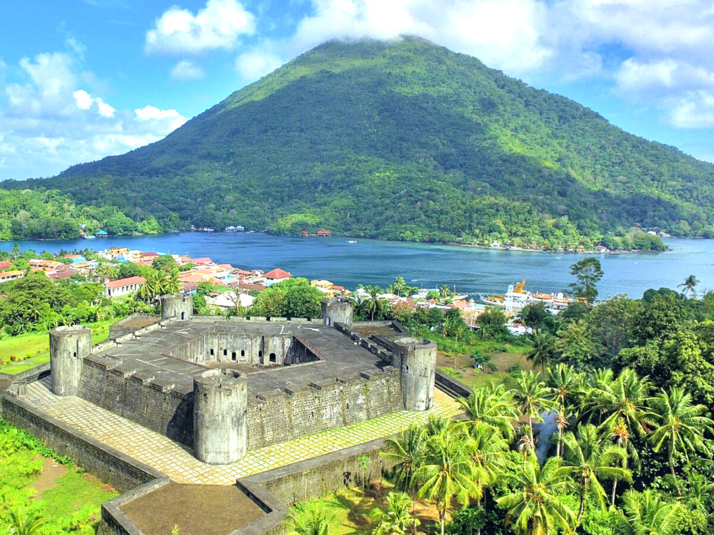
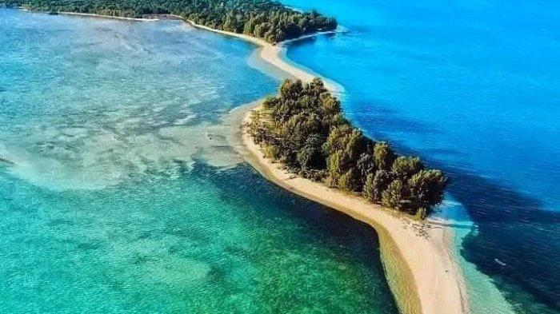
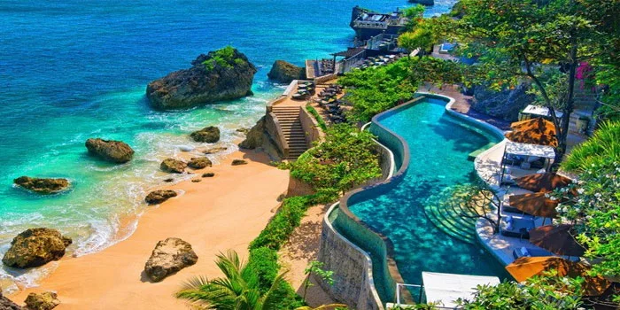
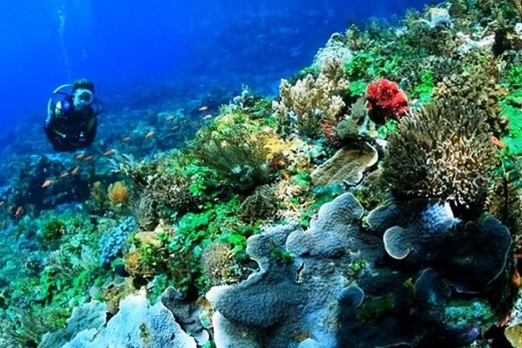
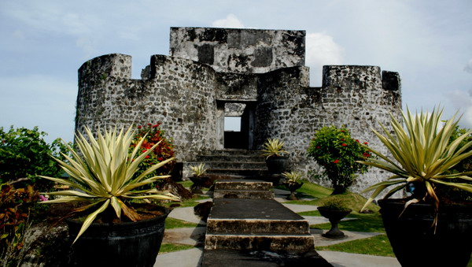
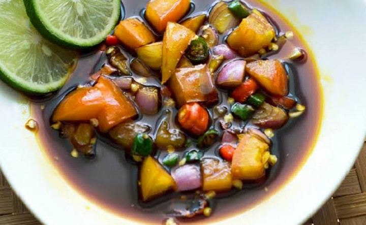

Tentang Kepulauan Maluku
Maluku, yang terbagi menjadi Maluku dan Maluku Utara, adalah gugusan kepulauan yang memiliki sejarah besar sebagai pusat perdagangan rempah dunia—terutama cengkeh dan pala—yang menarik perhatian bangsa Eropa sejak abad ke-16. Kepulauan ini tidak hanya kaya akan warisan benteng dan peninggalan kolonial, tetapi juga dikenal karena keindahan alamnya yang masih perawan. Dari pegunungan yang ditutupi rempah hingga perairan biru jernih yang merupakan surga bagi para penyelam, Maluku menawarkan perpaduan sempurna antara petualangan sejarah dan keindahan maritim.
✨ Mengapa Memilih Maluku?
Maluku adalah destinasi untuk merasakan keindahan laut yang otentik dan menyentuh jejak sejarah dunia. Perairan Maluku diakui memiliki keanekaragaman hayati laut tertinggi di dunia, menjadikannya salah satu tempat menyelam dan *snorkeling* terbaik. Selain itu, pulau-pulau di Maluku seperti **Banda Naira** menyimpan cerita pahlawan nasional dan sisa-sisa kejayaan rempah yang dapat dieksplorasi melalui benteng-benteng kuno dan rumah-rumah bersejarah. Mengunjungi Maluku berarti menjelajahi mutiara tersembunyi Indonesia yang menjanjikan ketenangan, keindahan alam yang luar biasa, dan pelajaran sejarah yang mendalam.
🗺️ Destinasi Unggulan
Banda Naira (Maluku Tengah)
Pusat sejarah rempah dunia. Di sini terdapat Benteng Belgica yang megah, peninggalan Belanda, dan Gunung Api Banda. Tempat ideal untuk menyelami sejarah kolonial.
Pulau Ora (Maluku Tengah)

Dikenal sebagai "Maldives-nya Indonesia" dengan pantai pasir putih, air laut yang sangat jernih, dan akomodasi *cottage* di atas air yang menenangkan.
Pulau Morotai (Maluku Utara)
Pulau bersejarah tempat pertempuran Perang Dunia II terjadi. Morotai menawarkan wisata bahari dan museum peninggalan perang, termasuk bangkai kapal di bawah laut.
Kepulauan Kei (Maluku Tenggara)
Terkenal dengan Pantai Pasir Panjang (Ngurbloat) yang memiliki pasir sehalus tepung. Juga tempat yang cocok untuk menikmati budaya maritim lokal.
Taman Laut Selat Lembeh (Maluku Utara)
Meskipun lebih sering dikaitkan dengan Sulawesi Utara, perairan Maluku Utara berdekatan dan memiliki karakteristik serupa. Terkenal sebagai surganya *muck diving* (menyelam di lumpur) untuk melihat biota laut langka dan unik.
Benteng Rotterdam (Maluku Utara)
Salah satu benteng terbesar dan terawat yang menjadi saksi bisu perebutan rempah-rempah. Menyajikan pemandangan indah dan nuansa sejarah yang kental.
Makanan Khas Kepulauan Maluku
-
1. Ikan Kuah Kuning

Hidangan utama ikan laut segar yang dimasak dengan kuah berbumbu kunyit, jahe, dan rempah lainnya. Rasanya segar, asam, dan pedas.
-
2. Papeda

Makanan pokok pengganti nasi yang terbuat dari sagu, bertekstur kental seperti lem, dan dimakan bersama **Ikan Kuah Kuning** yang kaya rasa.
-
3. Kohu-Kohu

Salad khas Maluku yang terbuat dari ikan tuna cincang atau udang, dicampur sayuran (tauge, kacang panjang), kelapa parut, dan diberi perasan lemon cina.
-
4. Sambal Colo-Colo
Sambal khas yang wajib ada di setiap hidangan laut Maluku. Terbuat dari irisan cabai, bawang merah, tomat, dan dicampur perasan jeruk nipis.
📸 Galeri Foto Maluku